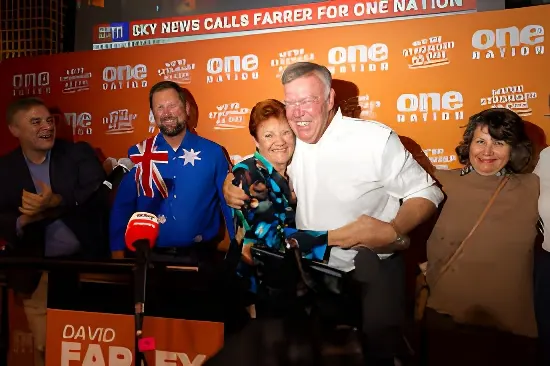

Aux élections fédérales australiennes du 3 mai 2026, le Parti travailliste d'Anthony Albanese a été reconduit au pouvoir avec une majorité renforcée à la Chambre des représentants. Mais c'est l'autre résultat de ce scrutin qui retiendra l'attention des analystes : One Nation, le parti populiste de droite radical de Pauline Hanson, a décroché quatre sièges au Sénat, son meilleur score depuis sa fondation en 1997. Ce score transforme le paysage politique australien et pose la question du rôle des tiers partis dans une démocratie à vote préférentiel.
Le 3 mai 2026, les Australiens ont reconduit Anthony Albanese et le Parti travailliste (ALP) pour un second mandat, avec une majorité absolue confortée à la Chambre des représentants — 77 sièges sur 151. La Coalition libérale-nationale de Peter Dutton a subi une défaite sévère, perdant plusieurs sièges dans les banlieues urbaines et les États-clés du Queensland et de la Nouvelle-Galles du Sud. La droite australienne sort fragmentée : les Verts ont maintenu leurs positions dans les grandes métropoles, et surtout, One Nation a capté une part significative du vote protestataire dans les zones rurales et périurbaines.
C'est au Sénat que le séisme est le plus net. Le scrutin proportionnel à l'échelle des États a permis à One Nation de convertir ses 6,8 % de vote national en quatre mandats sénatoriaux. Le parti siège désormais avec quatre sénateurs — une première dans son histoire moderne —, ce qui lui confère un poids inédit dans la chambre haute où le gouvernement travailliste devra négocier ses textes législatifs.
Pour comprendre la portée de ce résultat, il faut remonter à 1996, lorsque Pauline Hanson, ex-épicière du Queensland écartée du Parti libéral, est élue à la Chambre des représentants en indépendante. Elle y prononce un discours inaugural retentissant dans lequel elle déclare : « l'Australie est submergée par des Asiatiques ». En 1997, elle fonde One Nation, qui remporte 23 sièges au Parlement du Queensland lors des élections de 1998 — un tremblement de terre politique. Mais le parti s'effondre rapidement sous le poids des dissensions internes, des scandales et des attaques juridiques coordonnées par la Coalition.
Hanson est renvoyée du Parlement en 2003, condamnée pour fraude électorale avant que sa condamnation ne soit annulée en appel. Elle revient au Sénat fédéral en 2016, portée par la vague populiste mondiale post-Brexit. En 2026, à 71 ans, elle réalise ce qui constitue sans doute son meilleur résultat institutionnel : quatre sénateurs qui feront peser le parti comme jamais dans les négociations législatives à Canberra.
« Les Australiens ordinaires en ont assez d'être ignorés. Ce soir, ils se sont fait entendre. »
— Pauline Hanson, nuit électorale du 3 mai 2026« One Nation représente une réalité que les deux grands partis préfèrent ne pas voir : l'angoisse des Australiens de l'intérieur face à la mondialisation, à l'immigration et à la flambée du coût de la vie. »
— Professeure Sarah Murray, University of Western Australia, mai 2026One Nation a articulé sa campagne 2026 autour de quatre axes principaux : une réduction drastique de l'immigration légale et illégale, un retour aux énergies fossiles face à la « folie des énergies renouvelables », un rejet du programme d'action pour le droit constitutionnel des peuples autochtones (Voice to Parliament, rejeté par référendum en 2023), et une hostilité marquée envers la mondialisation et les accords de libre-échange. Le parti a également surfer sur les inquiétudes liées à la crise du logement, présentant l'immigration comme l'une de ses causes principales.
Cette plateforme a trouvé un écho particulier dans les zones rurales et périurbaines du Queensland, de l'Australie-Occidentale et de la Nouvelle-Galles du Sud, où le sentiment d'abandon par les élites de Sydney et Melbourne est vivace. Le résultat souligne une fracture géographique et socioéconomique déjà observable lors des élections de 2019 et 2022, mais qui s'est accentuée avec l'inflation et la crise de l'accessibilité au logement.
Pauline Hanson élue à la Chambre des représentants en indépendante. Son discours inaugural provoque un choc national.
Fondation de One Nation. Le parti remporte 23 sièges au Parlement du Queensland, puis s'effondre sous les dissensions internes et les attaques judiciaires.
Retour de Hanson au Sénat fédéral avec trois autres sénateurs One Nation. Début de la résurgence du parti.
Rejet par référendum de la Voice to Parliament. One Nation mène une campagne active pour le « Non » et capitalise sur la défaite gouvernementale.
Élections fédérales : One Nation décroche 4 sièges au Sénat, meilleur score de son histoire. La Coalition libérale-nationale est battue à la Chambre basse.
| Parti | 2019 | 2022 | 2026 |
|---|---|---|---|
| One Nation | 2 | 2 | 4 |
| Verts (Greens) | 9 | 12 | 11 |
| Indépendants / Autres | 5 | 6 | 5 |
La percée de One Nation en 2026 n'est pas un accident de scrutin. Elle traduit une recomposition profonde de l'électorat australien, tiraillé entre une métropole cosmopolite et une périphérie qui se sent oubliée des grandes dynamiques économiques. Le gouvernement Albanese devra désormais composer avec quatre sénateurs One Nation pour faire adopter certains textes, notamment budgétaires ou liés à l'énergie. Ce rôle d'arbitre confère au parti une influence institutionnelle sans précédent depuis sa fondation — et pose la question de la normalisation des positions de l'extrême droite dans le débat public australien, un phénomène déjà observable dans de nombreuses démocraties libérales à travers le monde.
At Australia's federal elections on 3 May 2026, Anthony Albanese and the Labor Party were returned to power with a strengthened majority in the House of Representatives. But the result that will most occupy political analysts is the other story of the night: One Nation, Pauline Hanson's radical right-wing populist party, won four Senate seats — its best result since its founding in 1997. The outcome reshapes the Australian political landscape and raises questions about the role of minor parties in a preferential voting democracy.
On 3 May 2026, Australians returned Anthony Albanese and the Australian Labor Party (ALP) for a second term, with a strengthened absolute majority in the House of Representatives — 77 seats out of 151. Peter Dutton's Liberal-National Coalition suffered a severe defeat, losing seats in urban suburbs and in the key states of Queensland and New South Wales. The Australian right emerges fragmented: the Greens held their positions in major cities, and most strikingly, One Nation captured a significant share of the protest vote in rural and peri-urban areas.
The Senate is where the shift is most dramatic. The state-level proportional ballot allowed One Nation to convert its 6.8% national vote into four Senate mandates — a first in the party's modern history. The party now sits with four senators, giving it unprecedented leverage in the upper house, where the Labor government will need to negotiate its legislative agenda.
To understand the significance of this result, one must go back to 1996, when Pauline Hanson — a former fish-and-chip shop owner from Queensland dropped by the Liberal Party — was elected to the House of Representatives as an independent. Her maiden speech caused a national shock, declaring that Australia was "being swamped by Asians." In 1997, she founded One Nation, which won 23 seats in the Queensland Parliament in 1998 — a political earthquake. The party then collapsed rapidly under internal divisions, scandals and coordinated legal attacks by the Coalition.
Hanson was thrown out of Parliament in 2003, convicted of electoral fraud before her conviction was overturned on appeal. She returned to the federal Senate in 2016, buoyed by the global post-Brexit populist wave. In 2026, aged 71, she has achieved what is arguably her strongest institutional result: four senators who will carry the party's weight as never before in legislative negotiations in Canberra.
"Ordinary Australians are sick of being ignored. Tonight, they made themselves heard."
— Pauline Hanson, election night, 3 May 2026"One Nation represents a reality that both major parties would rather not see: the anxiety of inland Australians in the face of globalisation, immigration and a soaring cost of living."
— Professor Sarah Murray, University of Western Australia, May 2026One Nation built its 2026 campaign around four main pillars: a drastic reduction in legal and illegal immigration; a return to fossil fuels against what it calls the "renewable energy madness"; rejection of the Aboriginal and Torres Strait Islander Voice to Parliament (defeated by referendum in 2023); and marked hostility to globalisation and free trade agreements. The party also capitalised on the housing affordability crisis, presenting immigration as one of its primary causes.
This platform resonated particularly in rural and peri-urban areas of Queensland, Western Australia and New South Wales, where a sense of abandonment by the Sydney and Melbourne elites runs deep. The result underlines a geographic and socioeconomic divide already visible in the 2019 and 2022 elections, which has sharpened amid inflation and the housing accessibility crisis.
Pauline Hanson elected to the House of Representatives as an independent. Her maiden speech provokes national controversy.
One Nation founded. The party wins 23 seats in the Queensland Parliament, then collapses under internal divisions and legal attacks.
Hanson returns to the federal Senate with three other One Nation senators. The party's resurgence begins.
The Voice to Parliament referendum is defeated. One Nation campaigns actively for 'No' and capitalises on the government's loss.
Federal elections: One Nation wins 4 Senate seats — its best result ever. The Liberal-National Coalition is defeated in the lower house.
| Party | 2019 | 2022 | 2026 |
|---|---|---|---|
| One Nation | 2 | 2 | 4 |
| Greens | 9 | 12 | 11 |
| Independents / Others | 5 | 6 | 5 |
One Nation's 2026 breakthrough is not an electoral accident. It reflects a deep realignment of the Australian electorate, caught between a cosmopolitan metropolitan core and a periphery that feels left behind by the dominant economic dynamics. The Albanese government will now need to negotiate with four One Nation senators to pass certain legislation, particularly on budget and energy matters. This arbitration role gives the party institutional influence unprecedented since its founding — and raises the question of the mainstreaming of far-right positions in Australian public debate, a phenomenon already observable across liberal democracies worldwide.